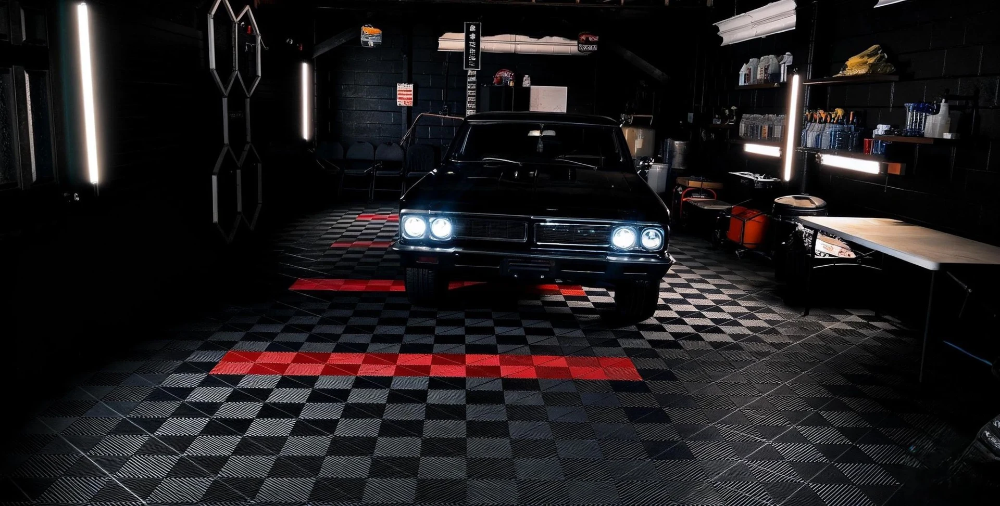

Tell us what you drive.
Share your vehicle, its condition and the result you have in mind.

Explore Dapper’s studio. Service information is available below.
The road leaves its mark.
We take care of what comes next.
ONE CAR. FOUR WAYS TO CARE.
Scroll to enter the studio
02 — THE TRANSFORMATION
A FRESH START
Remove the everyday build-up. Explore a clean, refined exterior, then unlock the cabin for a closer look inside.
Move from the untreated state to the service preview.
Rain falls over the car; beads and runoff illustrate a water-repellent finish.
Tinted edges illustrate full-body coverage. Film is clear in real use.
Appearance preview only. Film, glass and lighting affect the result. Confirm suitable options with Dapper.
Illustrative 3D simulation · not a service guarantee or a customer before/after.
03 — BEAUTY GOES DEEPER
Care follows you into the cabin. Unlock the door, step closer and explore the surfaces that make every drive feel different.
Explore the model’s cabin. Interior detailing packages are confirmed with the team.
04 — OUT OF THE STUDIO
Explore the Porsche Carrera GT in our interactive studio.
These photographs are from Dapper’s portfolio.
Loading the latest work…
CARE WITH A CLEAR PLAN
Share your vehicle, its condition and the result you have in mind.
Discuss detailing, coating, film or tint with the Dapper team.
Contact the team to confirm your package, pricing and appointment.
A FEW THINGS TO KNOW
The studio is an interactive 3D illustration of each service. It is not a measured comparison or a customer result. Actual portfolio photographs appear separately above.
The water test illustrates water beading on a water-repellent surface. It does not imply waterproof paint, scratch-proofing or a particular product warranty. Ask Dapper about the coating and maintenance options.
Sign in to your customer account to choose a vehicle, view published offers and request an available time. A request is not a confirmed appointment. Contact the team if you are new to Dapper or need help choosing a service.
PETERBOROUGH, ONTARIO
Tell us about your vehicle and the care you have in mind. We’ll help you choose the next step.
Sign in for available services and appointment requests, or contact the team for help.